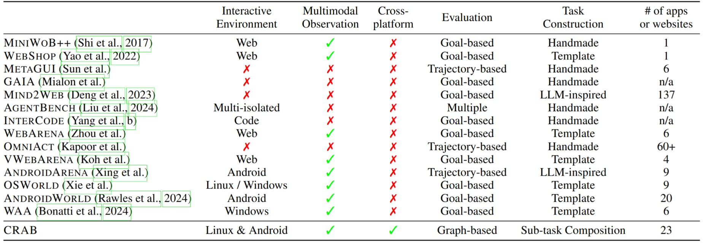

Open "Slack" in Ubuntu, navigate to "multi-modal-benchmark" channel, summarize the last two messages, then use "Messages" app in android phone to send the to the first contact in the list.
Settings: OpenAI GPT-4o + Multi-agent by Functionality
CRAB aims to become a general-purpose agent benchmark framework for Multimodal Language Model (MLM) agents. CRAB provides an end-to-end while easy-to-use framework to build agents, operate environments, and create benchmarks to evaluate them, featuring three key components: cross-environment support, a graph evaluator, and task generation. We present CRAB Benchmark-v0, developed using the CRAB framework, which includes 120 tasks across 2 environments (Ubuntu and Android), tested with 6 different MLMs under 3 distinct communication settings.
| Model | Completion Ratio (%) | Parameter Size | Visual Prompt | Structure Output Type | Release Date |
|---|---|---|---|---|---|
| gpt-4o-2024-05-13 | 38.01 | Unknown | SoM (GroundingDino+EasyOCR) | Tool calling API | 2024-10 |
| gpt-4-turbo-2024-04-09 | 33.35 | Unknown | SoM (GroundingDino+EasyOCR) | Tool calling API | 2024-10 |
| gpt-4o-2024-05-13 | 23.05 | Unknown | SoM (GroundingDino+EasyOCR) | model-generated JSON | 2024-10 |
| claude-3-opus-20240229 | 19.60 | Unknown | SoM (GroundingDino+EasyOCR) | Tool calling API | 2024-10 |
| Gemini 1.5 PRO | 15.48 | Unknown | SoM (GroundingDino+EasyOCR) | Tool calling API | 2024-10 |
| Pixtral-12B-2409 | 9.50 | 12B | SoM (GroundingDino+EasyOCR) | model-generated JSON | 2024-10 |
| llava-onevision-qwen2-72b-ov-chat | 6.64 | 72B | SoM (GroundingDino+EasyOCR) | model-generated JSON | 2024-10 |
The results are based on the CRAB Benchmark v0, released on 2024-10-18, with a total of 120 tasks.
Open "Slack" in Ubuntu, navigate to "multi-modal-benchmark" channel, summarize the last two messages, then use "Messages" app in android phone to send the to the first contact in the list.
Settings: OpenAI GPT-4o + Multi-agent by Functionality
Open "Tasks" app on Android, check the first incomplete task, then perform the task according to its description
Settings: OpenAI GPT-4o + Multi-agent by Functionality
Open "Calendar" app on Android, summarize all schedules today. Then, in Ubuntu, create a markdown file at "/home/crab/assets/plan.md" with each event as a checkbox bullet point using Terminal and Vim.
Settings: OpenAI GPT-4o + Single Agent
Please open the X app on my phone, search for CAMEL-AI.org, check the latest post, summarize them, and then send the summary to Tianqi Xu on Slack from my PC.
Settings: OpenAI GPT-4o + Single Agent
Demo videos are edited for a better viewing experience. In actual execution, there are tens of seconds of waiting time between each step.
We compare CRAB with existing GUI agents and benchmarks.
The columns detail key features of each framework:
@misc{xu2024crab,
title={CRAB: Cross-environment Agent Benchmark for Multimodal Language Model Agents},
author={Tianqi Xu and Linyao Chen and Dai-Jie Wu and Yanjun Chen and Zecheng Zhang and Xiang Yao and Zhiqiang Xie and Yongchao Chen and Shilong Liu and Anjie Yang and Zhaoxuan Jin and Jianbo Deng and Bochen Qian and Philip Torr and Bernard Ghanem and Guohao Li},
year={2024},
eprint={2407.01511},
archivePrefix={arXiv},
primaryClass={cs.AI},
url={https://arxiv.org/abs/2407.01511},
}